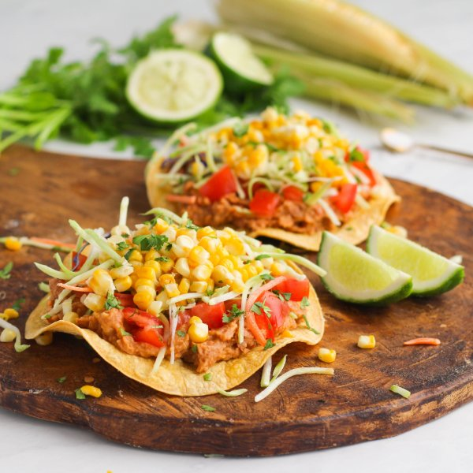

Roasted Corn & Bean Tostadas with Broccoli Slaw

Total Time
40 min
Nutrition (per serving)
625.3 kcalCalories
20.3 gProtein
88.5 gCarbs
25.8 gFat
Full nutrition table
| Calories | 625.3 kcal |
| Total fat | 25.8 g |
| Saturated fat | 3.8 g |
| Trans fat | 0 g |
| Cholesterol | 0 mg |
| Sodium | 359 mg |
| Carbohydrates | 88.5 g |
| Fiber | 17.1 g |
| Sugars | 11.3 g |
| Protein | 20.3 g |
| Potassium | 1279.2 mg |
| Calcium | 209.7 mg |
| Iron | 4.8 mg |
| Vitamin A | 1062.3 IU |
| Vitamin C | 110.1 mg |
| Vitamin D | 0 IU |
Cookware
Ingredients
- 1 (12 oz) pkgbroccoli slaw
- 1 small bunchcilantro
- 4 earscorn
- 3limes
- 2 (15 oz) canspinto beans
- 12small corn tortillas
- 2tomatoes
- chili powder
- cumin, ground
- extra virgin olive oil
- garlic powder
- onion powder
- salt
Steps
- Preheat oven to broil and position rack under the broiler.
- Remove the husks from the corn and brush with oil. Place on the top rack in the oven and cook for 6-8 minutes, flipping halfway through, until the corn begins to turn golden brown.4 ears corn
2 tsp extra virgin olive oil - Wash and dry the fresh produce. Skip the broccoli slaw if it came pre-washed.2 tomatoes
1 small bunch cilantro
1 (12 oz) pkg broccoli slaw
3 limes - Small dice the tomatoes and set aside.
- Shave the cilantro leaves off the stems; discard the stems and mince the leaves. Set aside.
- When the corn is done cooking, remove from oven and let cool for 5-6 minutes, until slightly warm to the touch.
- Preheat oven to 400°F. Line two baking sheets with parchment paper.
- Drizzle both sides of the tortillas with oil and sprinkle with salt; place in a single layer on two baking sheets. Bake for 10-15 minutes, flipping halfway through, until the tortillas are crispy and lightly browned on both sides.12 small corn tortillas
4 tsp extra virgin olive oil
½ tsp salt - While tortillas bake, drain and rinse the beans in a colander; add to a medium bowl.2 (15 oz) cans pinto beans
- Juice two limes and add to the bowl with the beans.
- Add oil, spices, and water to the bowl. Use a fork or potato masher to mash the mixture until smooth.¼ cup extra virgin olive oil
½ tsp salt
½ tsp garlic powder
½ tsp onion powder
½ tsp chili powder
½ tsp cumin
2 tbsp water - When the tortillas are done, remove from the oven and set aside.
- Stand corn upright on a cutting board and use a sharp knife to carefully cut kernels off of the cob.
- Cut the remaining lime into wedges.
- To assemble, top the tortillas with bean mixture, tomatoes, broccoli slaw, roasted corn, and cilantro. Garnish with lime wedges and enjoy!